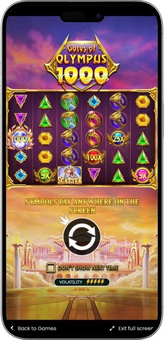
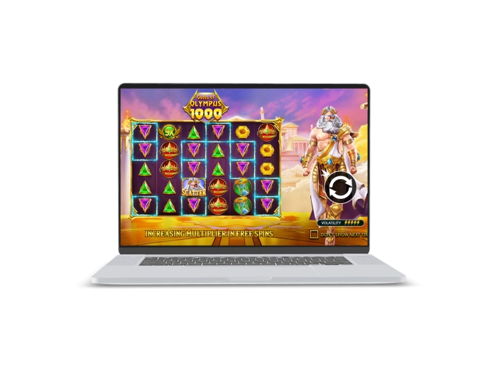

Exclusive welcome offer of
Exclusive welcome bonus of
Gates of Olympus 1000 — play online slot with multipliers up to 1000x
Top Casinos
Bonus Details
Casino
Bonuses
Rate
Free Spins
More Info
Get
Advantages
-
High multipliers up to massive 1000x.
-
Cascading wins extend every successful spin.
-
Free spins boost big win potential.
-
Simple rules and dynamic gameplay flow.
-
Vivid design with ancient mythology atmosphere.
-
Huge maximum payout up to 15000x.
-
Great for fans of volatile slots.
Gates of Olympus 1000 App



Gates of Olympus 1000 — slot review and features
Gates of Olympus 1000 is a bright and dynamic slot inspired by ancient Greek mythology, with the mighty Zeus taking center stage.
The game uses a 6x5 layout and features cascading wins, allowing a single successful spin to trigger multiple consecutive payouts. Its standout feature is the multiplier range up to 1000x, which significantly increases the excitement and win potential of the game.

Symbols pay when enough matching icons land anywhere on the screen, making the gameplay feel more open and action-packed. Free spins are especially important here because multipliers can build up across the entire bonus round. Gates of Olympus 1000 is an excellent choice for players who enjoy high-volatility slots with the possibility of major rewards. It is a bold, fast-moving slot designed for those who chase big moments.
Gates of Olympus 1000
Gates of Olympus 1000 — Key Features and Characteristics
Gates of Olympus 1000 is a high-volatility video slot built around multipliers, cascades, and free spins. It combines a dramatic mythological theme with simple gameplay rules that are easy to understand even for newer players. At the same time, the slot is clearly designed for those who enjoy strong payout potential and explosive bonus rounds. Thanks to its payout system and powerful feature set, the game stays intense and engaging throughout the session.
Features:
- • Provider: Pragmatic Play
- • Slot name: Gates of Olympus 1000
- • Theme: ancient Greek mythology, gods, Olympus
- • Grid size: 6x5
- • Payout mechanic: wins from 8 or more matching symbols anywhere on the screen
- • Slot type: video slot
- • Volatility: high
- • RTP: around 96.50%
- • Maximum multiplier: up to 1000x
- • Maximum win: up to 15000x the stake
- • Special mechanic: cascading wins
- • Bonus feature: free spins
- • Retrigger option: yes
- • Bonus buy: available in some versions and jurisdictions
- • Device support: desktop, tablet, smartphone
Gates of Olympus 1000 — Demo Mode
The demo mode in Gates of Olympus 1000 lets players explore the slot without risking their balance and gives them time to understand its core mechanics. In this version, it is easy to see how cascading wins work, how free spins are triggered, and how multipliers behave during the bonus round. It is a practical way to learn the pace of the slot, its volatility, and its overall payout style before switching to real stakes. Demo play is especially useful for newcomers and for players who want to test their own approach first. This mode helps build confidence and gives a clear feel for how the game performs.
Gates of Olympus 1000 — paytable and slot symbols
Gates of Olympus 1000 is a bright online slot inspired by ancient Greek mythology, where wins are awarded for 8 or more matching symbols anywhere on the reels. The main appeal of the game comes from cascading wins, free spins, and powerful multipliers that can significantly increase the final payout.
Below is the Gates of Olympus 1000 paytable for the main symbols. The values are shown as multipliers of the stake.
| Symbol | for 8+ | for 10+ | for 12+ |
|---|---|---|---|
| Crown | 10x | 25x | 50x |
| Hourglass | 2.5x | 10x | 25x |
| Ring | 2x | 5x | 15x |
| Goblet | 1.5x | 2x | 12x |
| Red Gem | 1x | 1.5x | 10x |
| Purple Gem | 0.8x | 1.2x | 8x |
| Yellow Gem | 0.5x | 1x | 5x |
| Green Gem | 0.4x | 0.9x | 4x |
| Blue Gem | 0.25x | 0.75x | 2x |
Software Providers
Gates of Olympus 1000 — bonuses, features, and how to play
Gates of Olympus 1000 — Bonuses and Special Features
Gates of Olympus 1000 is built around bonus mechanics that make the game far more exciting than a standard classic slot. Its real value comes not only from base payouts, but from the way different features can combine to boost the result of a single successful round. Cascades, multipliers, and free spins play the central role here because they define the slot’s biggest winning potential. Even a regular spin can turn into a long chain of payouts when new symbols keep landing after each winning drop. The bonus round is the most important part of the game, as this is where the multiplier system becomes especially powerful. An additional advantage for experienced players may be the bonus buy option, when it is available in the local version of the game. The slot also appeals strongly to players who enjoy risk, volatility, and sudden bursts of action that can completely change the session. That is why Gates of Olympus 1000 stands out as a title focused on explosive feature-driven gameplay. It is important to remember that bonus triggers may come at different frequencies, but those rare high-impact moments define the identity of the game.
Main bonuses and special features:
- •
Cascading wins.
After every winning combination, the symbols disappear and new ones drop into place. This creates the chance for several wins within a single spin.
Example: one spin can lead to 2, 3, or even more consecutive cascades. - •
8+ symbol payout system.
There is no need for traditional paylines. You simply need 8, 10, 12, or more matching symbols anywhere on the screen.
Example: 8 matching symbols already trigger a payout, while 12 or more usually produce a much stronger result. - •
Random multipliers in the base game.
Multiplier symbols can appear and enhance the total outcome of a cascade sequence.
Example: if 5x and 10x multipliers land in the same round, the combined value may reach 15x. - •
Multipliers up to 1000x.
This is the defining feature of the 1000 version. It significantly increases the potential for rare but massive wins.
Example: possible values may include 2x, 5x, 10x, 25x, 50x, 100x, 250x, 500x, and up to 1000x. - •
Free spins feature.
The bonus mode is triggered when 4 or more scatter symbols appear. This awards a starting package of free spins and opens the way to the slot’s biggest moments.
Example: 4 scatters can award 15 free spins. - •
Multiplier accumulation during free spins.
In the bonus round, all multipliers collected during a winning cascade are added together and applied to the total win. This makes successful free spins especially powerful.
Example: a single bonus spin may combine 20x + 50x + 100x = 170x. - •
Free spins retrigger.
During the free spins feature, extra spins can be added if the required number of scatters appears again.
Example: 3 scatters in the bonus round may award 5 additional free spins. - •
Maximum win potential up to 15000x.
The slot is clearly designed for big payouts, especially inside a bonus sequence with multiple cascades and strong multipliers.
Example: with a stake of 1, the theoretical top reward can reach 15000 in account currency. - •
Bonus buy option.
In some versions, players can jump directly into the free spins round without waiting for a natural trigger. Example: the feature cost may be around 100x the current stake. - •
High volatility as a gameplay advantage.
While not a bonus in the classic sense, high volatility is a major attraction for players chasing rare but significant payouts.
Example: a long quiet stretch can be followed by one powerful bonus round with a huge multiplier.
Gates of Olympus 1000 Free Spins and Multipliers
Gates of Olympus 1000 is built around powerful bonus mechanics that make every spin more exciting. The most important features in this slot are the free spins round, random multipliers, and the ability to combine multiple multiplier values into one stronger result. These mechanics create the high win potential that makes Gates of Olympus 1000 especially popular among fans of volatile online slots.
The table below explains how the free spins and multiplier features work in Gates of Olympus 1000.
| Element | Effect | Max Bet |
|---|---|---|
| Free Spins | 4 or more Scatter symbols land in the base game | Award 15 free spins and activate the main bonus round |
| Free Spins Retrigger | 3 or more Scatter symbols land during free spins | Add 5 extra free spins to extend the bonus feature |
| Random Multipliers | Multiplier symbols appear during spins or tumbles | Increase the total win by a random value from 2x to 1000x |
| Combined Multipliers | More than one multiplier lands in the same tumble sequence | All multiplier values are added together before being applied to the win |
| Persistent Multiplier in Free Spins | A multiplier lands during the free spins feature | The value is added to the total bonus multiplier for stronger winning potential |
| Tumble Feature | A winning combination is formed | Winning symbols disappear and new symbols fall into place for additional chances to win |
| High Bonus Potential | Free spins connect with tumbles and multiple multipliers | Creates the strongest payout opportunities in the slot |
Gates of Olympus 1000 — How to Play
Playing Gates of Olympus 1000 is quite simple once you understand its core logic and main bonus features. The key focus is not on paylines, but on how many matching symbols appear across the entire grid, along with multiplier and scatter symbols. The better you understand the bonus structure, the more confidently you can approach the game.
Step by step:
- 1.
Choose your stake size.
Before you start, set a comfortable spin amount. It is best to choose a stake that allows for enough spins without putting too much pressure on your balance. - 2.
Start the spin.
Press the spin button and wait for the result. In this type of slot, it is important to watch not only the first outcome, but also whether a cascade sequence begins. - 3.
Watch for winning symbols.
In Gates of Olympus 1000, payouts are awarded for 8 or more matching symbols appearing anywhere on the grid. The more matching symbols you land, the stronger the payout. - 4.
Pay attention to cascades.
After a winning combination, the symbols disappear and new ones fall from above. This can extend the round and improve the final result without an extra stake. - 5.
Track the multipliers.
Multipliers are one of the most important parts of the game. They can dramatically increase the final win, especially during strong cascade chains or free spins. - 6.
Look for scatter symbols.
You need the required number of scatters to trigger the bonus round. Free spins are often the main source of the slot’s biggest wins. - 7.
Use demo mode for practice.
Before switching to real-money play, it helps to test the slot in its free version. This gives a better feel for the pace, event frequency, and bonus behavior. - 8.
Manage your balance carefully.
Since the slot is high volatility, it is important to decide on a playing limit in advance. This makes the session more comfortable and sustainable.
Gates of Olympus 1000 — Useful Tips for Playing
Gates of Olympus 1000 is best approached as a high-volatility slot built around rare but powerful bonus sequences. Instead of expecting frequent steady payouts, it is better to understand that the main potential usually appears in long cascades and strong free spin rounds. A calm and disciplined approach makes the game more enjoyable and helps you read its rhythm more clearly.
Tips:
- •
Start with a moderate stake.
High volatility means the slot may go through longer stretches without major payouts. A moderate bet gives you more room to stay in the game and wait for a stronger bonus moment. - •
Test the demo mode first.
The free version helps you see how often cascades trigger, how active the multipliers feel, and what the overall pace of the slot is like. - •
Do not judge the slot by a few spins.
Gates of Olympus 1000 shows its true behavior over time. A very short session rarely reflects the real pattern of a volatile slot. - •
Focus on the bonus round.
Free spins are usually where the biggest results happen. If you are interested in strong win potential, pay close attention to how the bonus feature works. - •
Respect the power of combined multipliers.
Even a medium-sized base win can become very significant once strong multipliers are added. In this game, outcomes are often decided by combinations of features. - •
Set limits in advance.
A predefined limit on stake size or session duration helps maintain control and keeps the experience more comfortable. - •
Avoid sharp stake increases.
After a good or bad run, it is usually better to stay consistent. Sudden bet jumps can make the session feel less balanced. - •
Watch for bonus buy availability.
If your version includes Bonus Buy, consider it carefully. It gives direct access to free spins, but it also creates a heavier impact on your balance. - •
Play on a suitable device.
A stable screen and удобный interface make it easier to follow cascades, multipliers, and bonus development. - •
Keep realistic expectations.
The slot has strong potential, but every round remains random. A realistic mindset makes the experience smoother and more enjoyable.
Frequently Asked Questions
The main difference is the increased maximum multiplier. In the 1000 version, multiplier potential is higher, making the slot feel more aggressive and even more focused on big bonus payouts.
Yes, the core mechanics are quite easy to understand because the game does not rely on complicated paylines or layered systems. However, beginners should remember that high volatility makes results less predictable.
Yes, because the stake affects not only the possible payout level, but also how comfortably a player handles volatile stretches. A moderate spin size often helps extend the session.
They are central to the entire experience. The slot remains interesting without them, but multipliers create the most exciting and rewarding moments.
It is best for players who enjoy visually strong slots with high risk, bonus rounds, and the chance of powerful multipliers. It also appeals to fans of mythological themes and energetic gameplay.